De opdracht was om een matching site te maken die mensen met een zelf bedacht onderwerp zou moeten matchen. Wij hebben ervoor gekozen om een site te maken die mensen zouden matchen met een museum waar ze naar toe zouden willen gaan op basis van de kunst die de gebruiker leuk vind. Deze site moet live kunnen gaan en verbinding kunnen maken met een database waarin alle gegevens opgeslagen kunnen worden.
In deze opdracht werkte ik samen met 4 teamgenoten: Liam van Bart, Sybren Loos, Ruben Beck & Sem van Wijk. Ons team werd verdeeld in 3 back-end developers en 2 front-end developers.
Dylan (ikzelf) - Back-end Developer: Ik was zelf verantwoordelijk voor het filtersysteem, het matchsysteem, het sorteersysteem en het kunnen opslaan van de antwoorden van de gebruikers.
Liam - Back-end Developer: Liam was veantwoordelijk voor het koppelen van opgeslagen data met een profiel. Alles wat te maken heeft met het bewerken van je accountgegevens heeft hij geprogrammerd.
Sybren - Back-end Developer: Sybren was verantwoordelijk voor het inlogsysteem. Hij heeft ervoor gezorgd dat een gebruiker een account kan aanmaken, deze wordt opgeslagen in de database, en de gebruiker vervolgens kan inloggen.
Ruben & Sem - Front-end Developers: Ruben & Sem waren de 2 front-enders. Dit betekent dat zij verantwoordelijk zijn voor de layout, de vormgeving en gedeeltelijk de inhoud. Samen hebben zij de hele app met Adobe XD geschetst en deze met HTML en CSS na te maken.
Samen: We hebben met z'n allen samen het concept van de app bedacht. Verder was iedereen verantwoordelijk voor hun eigen code, maar ook voor elkaars code. Als iemand wijzigingen had gemaakt aan de code, zouden er altijd mensen moeten zijn om deze te checken voordat we onze volledige applicatie zouden updaten.
Website: De website is gemaakt voor mobiel en bis ingedeeld in 4 pagina's: De homepagina, de likespagina, de museumpagina en de accountpagina. Verder zijn er nog een paar pagina's voor het inlogsysteem.
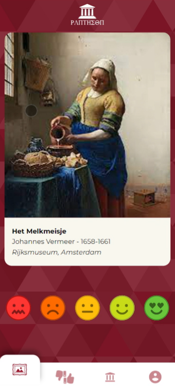
Homepagina
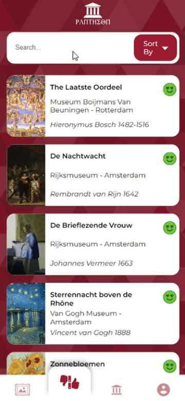
Likespagina
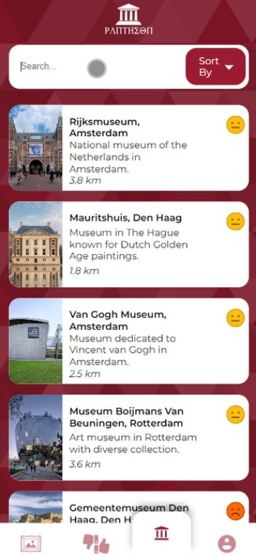
Museumpagina
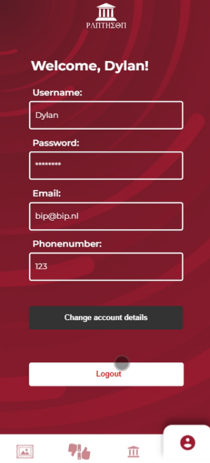
Accountpagina
Setup: Om deze website te runnen hebben we een aantal packages gebruikt, waaronder:
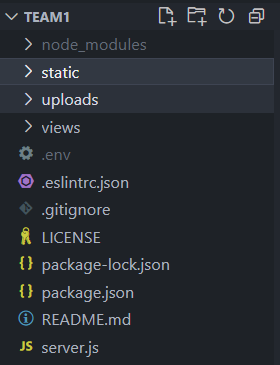
Alle bestanden in de code
Verder hebben we natuurlijk een databse nodig. We gebruiker hiervoor MongoDB. Alle data die de gebruiker invult op de website wordt hierop opgeslagen. Onze database bestaat uit 2 collecties: Login & Musea. De login bevat alle gebruikers en hun login informatie, waaronder de gebruikersnaam, email, telefoonnummer en wachtwoord (gehasht). De musea collectie bevat alle data alle musea, waaronder de naam, de afstand, de locatie en de bijhorende afbeelding. Verder staat er bij elk museum een aantal kunstwerken. Deze hebben de data voor de naam, artiest, jaartal, afbeelding en het meest belangrijke, de beoordeling van de gebruiker. Deze beoordeling is een nummer dat live wordt aangepast wanneer de gebruiker een beoordeling geeft aan een kunstwerk.
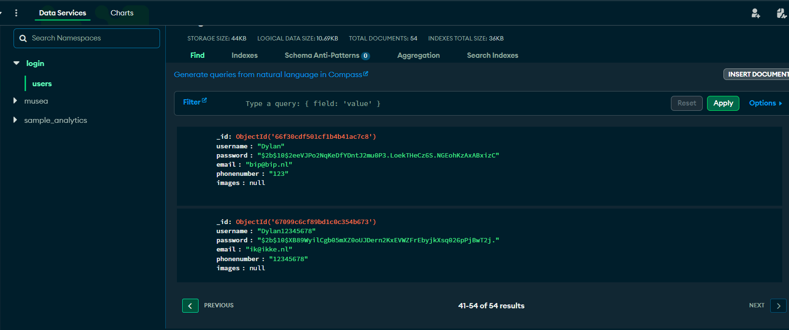
MongoDB database van de accounts
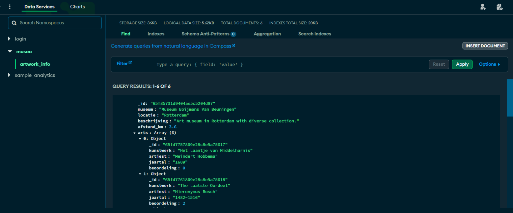
MongoDB database van de musea
Matchsysteem: De hoofdfunctie van de website is om de gebruiker te koppelen aan een museum met de kunst die hij/zij het mooist vind. Op de homepagina geef je per kunstwerk een beoordeling. Je krijgt een willekeurig kunstwerk van een willekeurig museum te zien en kan deze een beoordeling geven van 1 tot 5 dmv smileys. Dit kun je blijven doen zolang als je wil. Op de 2e pagina, de likes page, zie elk kunstwerk dat je hebt beoordeeld en welke beoordeling je deze hebt gegeven. Op de 3e pagina, de museumpagina, zie je de musea. Bovenaan staat het museum waarvan de kunst het beste is beoordeeld. Deze zou dan de go-to museum voor jou zijn.
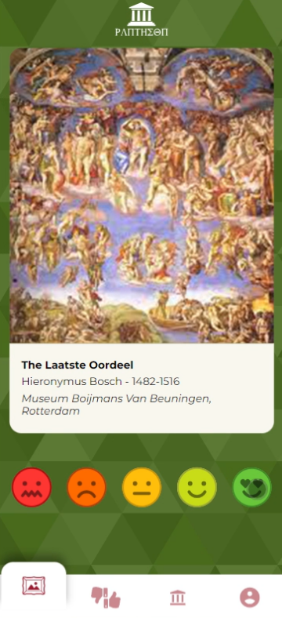
Kunstwerk goed beoordeeld (groen)
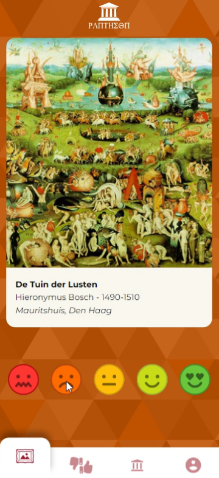
Kunstwerk slecht beoordeeld (oranje)
Alle beoordeelde kunstwerken van beste naar slechtste
Alle musea beoordeeld van beste naar slechtse
Filter- en sorteersysteem: Op de likes- en museapagina's zijn alle kunstwerken/musea automatisch gesorteerd op beoordeling (van best beoordeeld naar slechtst). Op deze pagina's is er een sorteerknop waarop je kunt sorteren op naam, museum, artiest, locatie, afstand etc.
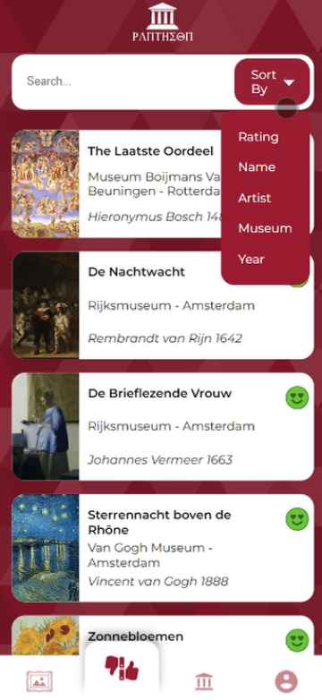
Likespagina Sorteerfunctie
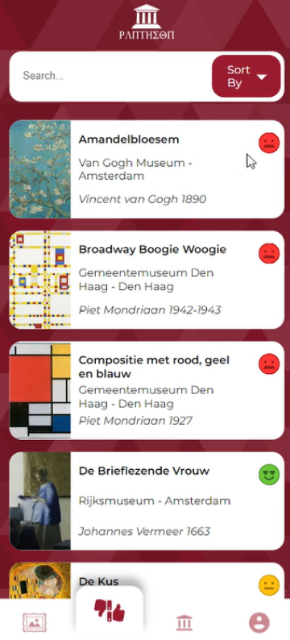
Likespagina gesorteerd op naam
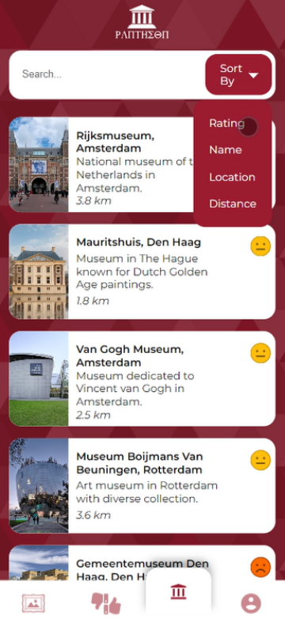
Museumpagina sorteerfunctie
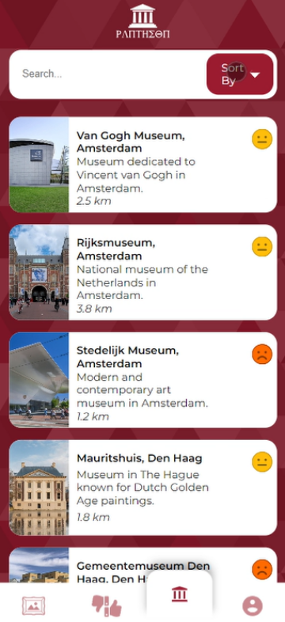
Museumpagina gesorteerd op locatie
Verder is er een zoekbalk die zal filteren op naam, museum, artiest en locatie.
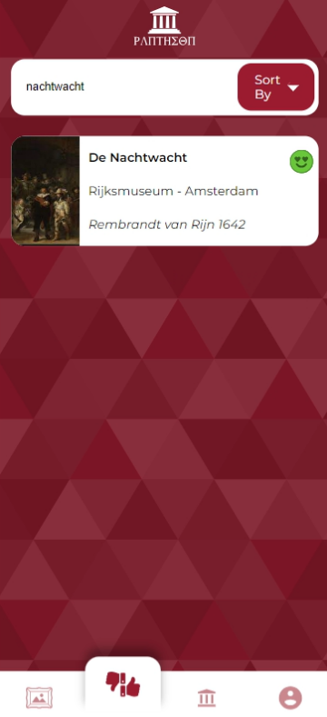
Likespagina gefilterd op Nachtwacht
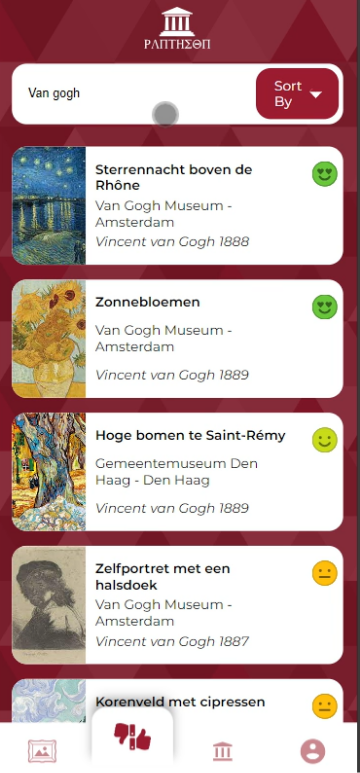
Likespagina gefilterd op Van Gogh Museum
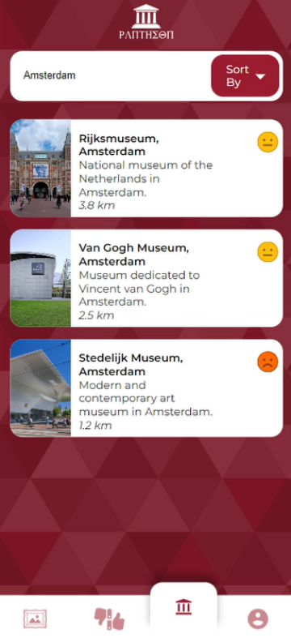
Museumpagina gefilterd op Amsterdam
In- en uitloggen: Om gebruik te maken van deze website moet je eerst een account maken en inloggen. Voor een account geef je een gebruikersnaam, een wachtwoord, een email en een telefoonnummer. Deze gegevens worden dan opgeslagen in de database. Als je bent ingelogd kun je via de accountpagina je gegevens aanpassen en ook uitloggen.
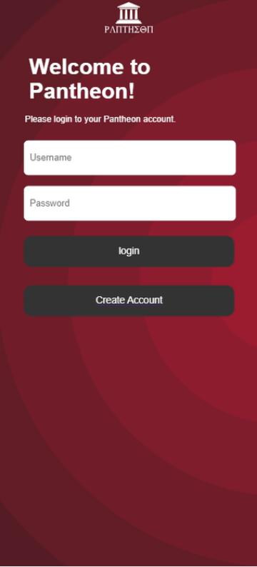
Loginscherm
Accountpagina
Eigen Reflectie: Ik vond dit een geweldig project om te doen. Ik heb veel nieuwe dingen geleerd over code en websites. Verder vind ik dat ik met mijn team een mooi resultaat heb gemaakt met deze website/app. Helaas hebben we niet alles wat we wilde af kunnen maken. We hebben geen live locatie van de gebruiker, wat betekent dat de afstanden van de musea niet kloppen en we hadden per kunstwerk maar 1 museum ondanks sommige kunstwerken in meerdere musea te zien zijn.
Omdat deze website vanaf je eigen terminal runt, staat deze helaas niet online op github. Om deze te runnen op je eigen desktop moet je de files van github downloaden. Deze bevat niet alles wat je nodig hebt, voor de overige spullen zul je contact op moeten nemen met 1 van de ons. Als je alles hebt gedownloadt kun je in de terminal npm install doen voor de packages en daarna npm run dev om de website online te zetten.